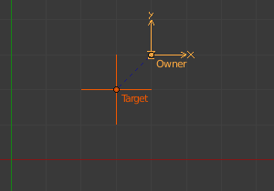
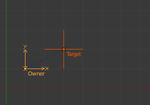
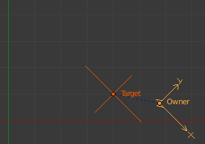

Примус «Нащадок» -- Child Of Constraint¶
Примус «Нащадок» -- Child Of -- це примусна версія стандартного відношення предок/нащадок між об'єктами (що установлюється через скорочення Ctrl-P у 3D Огляді -- 3D View).
Приріднення за допомогою примусу має кілька переваг та удосконалень у порівнянні з традиційним методом:
Ви можете мати кілька різних предків для одного і того ж об'єкта (виваживши їх відповідний вплив за допомогою повзунка «Вплив» -- Influence).
As with any constraint, you can key (i.e. animate) its Influence setting. This allows the object which has a Child Of constraint upon it to change over time which target object will be considered the parent, and therefore have influence over it.
Quan trọng
Не плутайте це «базове» приріднення об'єкта з тим, що визначається ланцюгами кісток -- chains of bones всередині арматури. Цей примус використовується для приріднення об'єкта до кістки (так зване «покривання об'єктом» -- object skinning), або навіть кісток до кісток. Але не намагайтеся використати його для визначення ланцюгів кісток.
Опції¶

Панель примусу «Нащадок» -- Child Of.
- Ціль -- Target
- The target object that this object will act as a child of. Ідентифікатор даних --- Data ID used to select the constraint's target, and is not functional (red state) when it has none.
- Локація -- Location X, Y, Z
- Кожна з цих кнопок буде давати або ні вплив приріднення на локацію вздовж відповідної осі.
- Обертання -- Rotation X, Y, Z
- Кожна з цих кнопок буде давати або ні вплив приріднення на оберт вздовж відповідної осі.
- Масштаб -- Scale X, Y, Z
- Кожна з цих кнопок буде давати або ні вплив приріднення на масштаб вздовж відповідної осі.
- Задати Інверсію -- Set Inverse
- Стандартно, коли ви приріднюєте ваш володілець до вашої цілі, то ціль стає початком для простору володільця. Це означає, що локація, оберт та масштаб володільця зсунуться відповідно до таких же властивостей цілі. Іншими словами, володілець трансформується, коли ви приріднюєте до його цілі. Це може бути не бажаним! Тому, якщо ви хочете відновити стан перед прирідненням для вашого володільця, клацніть на цю кнопку Set Inverse.
- Зчистити Інверсію -- Clear Inverse
- Ця кнопка розвертає (скасовує) вплив задання інверсії, відновлюючи стан володільця/нащадка до стандартного відносно його цілі/предка.
Поради¶
Коли створюється нове відношення приріднення за допомогою цього примусу, то зазвичай необхідно клацнути кнопку Set Inverse після призначення цілі-предка. Як зазначено вище, це скасує будь-які небажані трансформування володільця від предка, так що володілець повернеться у свої локацію/оберт/масштаб, в яких він був перед тим, як застосовано цей примус. Зауважте, що ви повинні застосовувати функцію Set Inverse при вимкнених інших примусах (їх Influence задано як 0.0) для кожного доданого примусу Child Of та перед трансформуванням його цілі/предка (дивіться приклад нижче).
About the toggle buttons that control which target's (i.e. parent's) individual transform properties affect the owner, it is usually best to leave them all enabled, or to disable all three of the given Location, Rotation and Scale transforms.
Технічна примітка¶
Якщо ви вживаєте цей примус для усіх каналів, то він буде використовувати пряме матричне множення для відношення приріднення, не розкомпоновуючи матрицю предка на локацію/оберт/масштаб. Це гарантує, що будь-яке трансформування буде правильно застосоване також для комбінацій обернутих та не-однорідно масштабованих предків.
Приклади¶

Без примусу.
Note the position of Owner empty 1.0 BU along the X and Y axes.
|

Додано примус «Нащадок» -- Child Of.
Here you can see that Owner empty is now 1.0 BU away
from Target_1 empty along X and Y axes.
|

Задано інверсію зсуву.
Було клацнуто кнопку Set Inverse і порожняк Owner повернувся у свою оригінальну позицію.
|

Трансформування цілі/предка.
Target_1 has been translated in the XY plane, rotated around the Z axis,
and scaled along its local X axis.
|

Зчищено інверсію зсуву.
Було клацнуто на кнопці Clear Inverse. Порожняк Owner знову повністю став керуватися початком порожняка Target.
|

Знову задано інверсію зсуву.
Знову клацнуто на кнопці Set Offset. Як ви можете бачити, ця функція не дає такий самий результат вже після трансформування цілі/предка (Target/parent transformed). Як зазначено вище, використовуйте функцію Set Inverse тільки раз, на самому початку перед трансформуванням вашої цілі/предка.
|